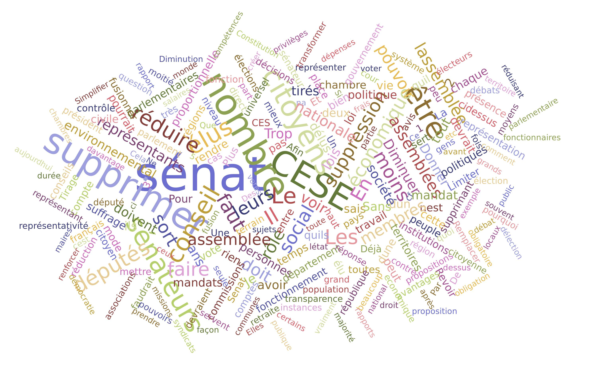

Les sujets récurrents du blabla
En analysant les réponses des citoyens, nous avons remarqué que certaines idées étaient abordées de manière récurrente.
Quels sujets tiennent le plus à coeur pour chaque thème du débat ?
Quels sujets tiennent le plus à coeur pour chaque thème du débat ?
-
La transition écologiqueTexte
-
La fiscalité et les dépenses publiquesTexte
-
La démocratie et la citoyenneté
 Texte
Texte -
L'organisation de l'Etat et des services publics
 Texte
Texte